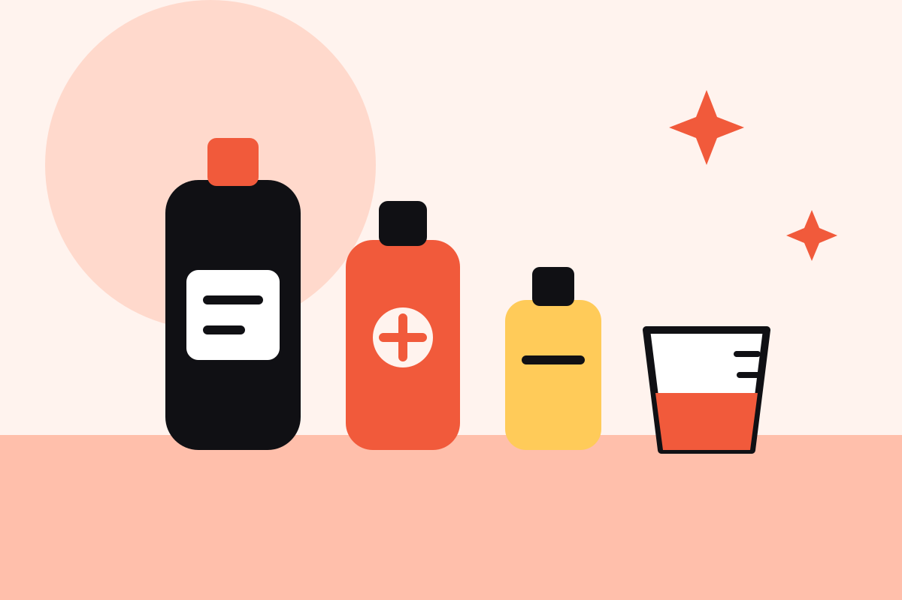

Des tournées par secteur
Les demandes proches sont rassemblées sur un même créneau. Vous répondez à une tournée entière, pas à une prestation isolée.
Nettoyage pour les entreprises
Bureaux, commerces, cabinets ou parties communes : Q DEAL confie l’entretien de vos locaux à des prestataires installés tout près, étudiants auto-entrepreneurs aujourd’hui, professionnels du nettoyage bientôt.

Pour les entreprises
Ménage régulier des bureaux, nettoyage avant l’ouverture d’une boutique, remise en état après travaux : décrivez les surfaces et les horaires, Q DEAL vous propose des prestataires de nettoyage installés à proximité.
Estimer un nettoyagePour les étudiants auto-entrepreneurs
Entre deux cours, nettoyez les bureaux et commerces de votre quartier. Q DEAL vous suggère des prestations proches de vos disponibilités et vous suit sur l’administratif : rappels URSSAF et assurance RC Pro, par email.
Pour les professionnels du nettoyage Bientôt disponible
Pour un professionnel, une prestation isolée à l’autre bout de la ville coûte souvent plus en trajet qu’elle ne rapporte. L’agenda intelligent de Q DEAL regroupe les demandes d’un même secteur sur la même demi-journée et vous propose une tournée complète.
Vous acceptez la tournée, l’agenda enchaîne les adresses dans l’ordre le plus court et réserve le temps de trajet entre deux locaux. Dès que le volume du quartier le permet, vos journées se remplissent de prestations voisines plutôt que de kilomètres.
Découvrir l’agenda intelligent
Les demandes proches sont rassemblées sur un même créneau. Vous répondez à une tournée entière, pas à une prestation isolée.
Quand c’est possible, l’entreprise choisit une plage horaire plutôt qu’une heure fixe. Cette souplesse permet de grouper les passages.
L’agenda calcule l’enchaînement le plus court et prévoit le temps de trajet réel entre deux adresses.
Les nettoyages hebdomadaires ou mensuels se calent sur vos jours de passage dans le quartier, pour remplir votre semaine durablement.
Apprendre avant d’intervenir
De courts modules montrent les gestes et les protocoles du nettoyage en entreprise, avant votre première prestation.

02Produits et dosages 03Une question ?
03Une question ?Une solution complémentaire
Une remise en état après travaux, une boutique à préparer avant l’ouverture, des salles à rafraîchir après un séminaire : ces besoins ponctuels sont difficiles à confier à une société de nettoyage sous contrat annuel. Q DEAL est pensé pour eux, comme pour les petits locaux qui n’ont besoin que de quelques heures par semaine.
Q DEAL complète les équipes d’entretien et les sociétés de nettoyage en place. Chaque prestataire reste libre de choisir ses prestations et ses clients.
Voir comment fonctionne Q DEAL
Du besoin à la mise en relation
L’entreprise indique le type de locaux et les surfaces, ajoute des photos et précise l’adresse. Q DEAL estime le temps nécessaire, puis propose la prestation aux prestataires dont la zone, les disponibilités et les services correspondent.
L’entreprise choisit qui contacter. Le prestataire choisit s’il accepte.
Découvrir les fonctionnalitésQuatre outils au service de la propreté
Les outils au cœur de chaque nettoyage Q DEAL.
L’entreprise photographie ses locaux pour obtenir une première estimation du temps de nettoyage et préciser les pièces incluses.
Les prestataires indiquent leur zone et leurs services, puis reçoivent des prestations proches, adaptées à leurs disponibilités.
De courts modules présentent les gestes et les produits du nettoyage professionnel, avant la première prestation.
Un chatbot répond aux questions courantes des entreprises et des prestataires, avant comme après la prestation.
Pour les entreprises
Indiquez le type de locaux, les surfaces et la fréquence souhaitée, puis ajoutez quelques photos. Q DEAL estime la durée du nettoyage et clarifie les attentes avec les prestataires à proximité.
L’estimation sert de point de départ. L’entreprise relit les détails et confirme les pièces, les horaires d’accès et les conditions de la prestation.
Demander une estimationPour tous les locaux professionnels
Régulier ou ponctuel, chaque nettoyage est confié à un prestataire proche.
Entretien des postes, des salles de réunion, de la cuisine et des sanitaires, avant l’arrivée des équipes ou après leur départ.
Vitrines, surfaces de vente, halls et parties communes : un nettoyage avant l’ouverture ou à heure fixe, sans gêner l’activité.
Remise en état après un chantier, nettoyage après un séminaire ou une soirée, local à préparer avant un emménagement.
Des locaux de toutes tailles
Du petit cabinet au plateau de bureaux.
Pour les étudiants auto-entrepreneurs
Un revenu près de chez vous, l’administratif en plus simple.
Sur Q DEAL, les étudiants auto-entrepreneurs indiquent leur zone, leurs disponibilités et les nettoyages qu’ils savent faire, puis reçoivent des prestations dans des entreprises proches. Vous choisissez vos prestations et pouvez travailler pour plusieurs clients.
Q DEAL vous rappelle par email vos déclarations URSSAF et le renouvellement de votre assurance RC Pro, avec le récapitulatif de ce que vous avez encaissé.
La proximité compte
Chaque prestataire choisit sa zone d’intervention. Q DEAL rapproche adresse, services et disponibilités pour proposer les bonnes prestations, et bientôt des tournées complètes aux professionnels.
À savoir
Q DEAL est une marketplace de nettoyage pour les entreprises. Elle confie l’entretien des locaux professionnels à des prestataires installés à proximité : des étudiants auto-entrepreneurs aujourd’hui, et bientôt des professionnels du nettoyage.
L’entretien régulier de bureaux, de commerces, de cabinets ou de parties communes, une remise en état après travaux ou après un événement, mais aussi le nettoyage de l’électroménager, des textiles ou des véhicules de l’entreprise. Chaque prestation doit correspondre aux services du prestataire et aux règles applicables à l’activité.
L’entreprise décrit ses locaux et ajoute des photos. L’estimation donne un premier repère sur la durée du nettoyage ; l’entreprise relit les informations et confirme le périmètre et les conditions finales de la prestation.
Le prestataire renseigne sa localisation, sa zone de déplacement, ses services et ses disponibilités. Q DEAL s’appuie sur ces informations pour suggérer des prestations proches et pertinentes.
Bientôt disponible pour les professionnels du nettoyage, il regroupe les demandes d’un même quartier sur une demi-journée et propose une tournée dans l’ordre le plus court. Le but : enchaîner plusieurs prestations voisines plutôt que de traverser la ville pour une seule.
Q DEAL envoie par email des rappels avant chaque déclaration URSSAF, avec le récapitulatif encaissé via la plateforme, et avant la fin de l’attestation d’assurance RC Pro. La déclaration reste faite par l’étudiant. En savoir plus
Q DEAL repose sur des prestations définies et sur la liberté du prestataire de répondre ou non, et de choisir ses clients. La plateforme ne garantit pas à elle seule un statut juridique : chaque relation de travail doit respecter les règles applicables.
Oui : de courtes vidéos sur les gestes et les produits du nettoyage professionnel, et un chatbot qui répond aux questions des entreprises comme des prestataires.
La notation après prestation, des espaces dédiés aux entreprises et aux prestataires, le suivi administratif des étudiants et un onboarding guidé pour affiner les suggestions de prestations.
Rejoignez Q DEAL